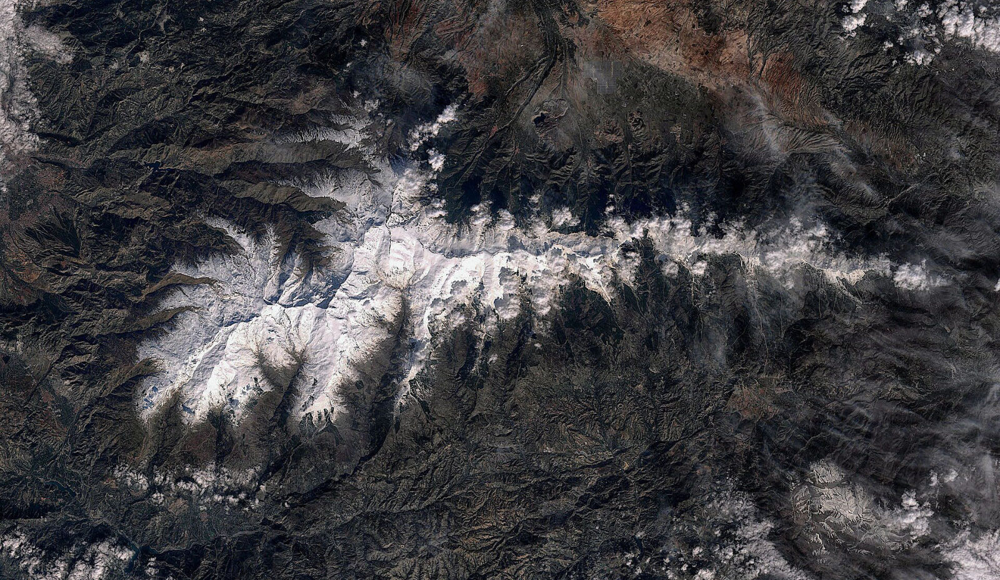
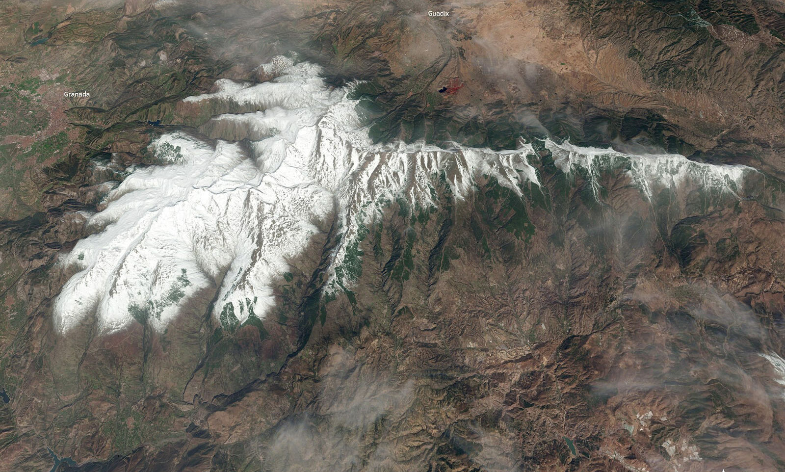

Qué son las Variables Esenciales de la Biodiversidad
Las Variables Esenciales de la Biodiversidad son el conjunto mínimo de medidas necesario para estudiar, seguir e informar sobre los cambios de la biodiversidad, tal como las propone la red internacional GEO BON. Las que se obtienen por teledetección permiten seguirlas de forma continua, repetible y comparable en grandes territorios, también donde es difícil llegar a pie.
EVEREST busca cuáles de ellas, y con qué métricas, sirven a los gestores de los parques nacionales de montaña para cumplir sus obligaciones de reporte.

Composición, estructura y función
Composición
- Cubiertas del suelo
- Masas de agua
- Tipos de hábitat
Estructura
- Biomasa
- Fragmentación
- Altura de la vegetación
- Heterogeneidad (cobertura leñosa y herbácea)
- Índice de área foliar
Función
Agua- Humedad del suelo y de la vegetación, evapotranspiración, nieve, hidroperiodo
- Temperatura del aire y de la superficie, albedo, radiación, nubosidad
- Verdor (producción primaria), fenología y estacionalidad
De la serie temporal a la métrica
Cada variable es una serie temporal. Para que sea útil la resumimos cada año en atributos funcionales con significado biológico. Por ejemplo, con el índice de vegetación NDVI:
- Media anual: estima la producción primaria total.
- Variabilidad estacional (desviación típica o coeficiente de variación): describe la estacionalidad.
- Fechas del máximo y del mínimo: describen la fenología.
Combinando estos atributos se definen los Tipos Funcionales de Ecosistemas (EFT): zonas con una dinámica similar de intercambio de materia y energía. EVEREST ha comprobado con 50 torres de flujo de FLUXNET que los EFT discriminan la dinámica del intercambio neto de CO₂ (kappa = 0,95).
Cómo seleccionamos las variables
Partimos de unos 90 indicadores de las metodologías oficiales de evaluación del estado de conservación, de los que alrededor del 40 % son medibles por teledetección. Para quedarnos con las métricas más informativas e independientes aplicamos análisis de componentes principales y de correlación, el factor de inflación de la varianza y técnicas de agrupación y ordenación (k-means, NMDS y t-SNE). Las variables seleccionadas se prueban con los gestores en los casos de estudio de la Tarea 4.
Datos y sensores
| Sensor | Resolución | Periodo | Uso en EVEREST |
|---|---|---|---|
| MODIS | 250 m – 1 km | Desde 2000 | Funcionamiento a escala de paisaje y Tipos Funcionales de Ecosistemas |
| Landsat | 30 m | Desde los años ochenta | Series largas: nieve, verdor, perturbaciones y restauración |
| Sentinel-2 | 10–20 m | Desde 2015 | Hábitats, clorofila de las lagunas y nieve |
| PlanetScope | ≈ 3 m | Casi diaria | Nieve y lagunas pequeñas |
| LiDAR del PNOA | Alta resolución | Periodos recientes | Altura y estructura de la vegetación |
Los datos se procesan en Google Earth Engine gracias al acuerdo institucional entre Google, LifeWatch ERIC y la Universidad de Granada, y se complementan con series climáticas y con los datos de campo de los programas de seguimiento de cada parque.
Referencias, tendencias y anomalías
Para saber si un ecosistema cambia hace falta una referencia. Calculamos la curva estacional media de cada variable y su variabilidad histórica, las tendencias a largo plazo (pruebas de Mann-Kendall y pendiente de Sen) y las anomalías respecto a esa variabilidad, que pueden avisar de cambios antes de que sean evidentes. Tras una perturbación, las mismas series permiten medir la severidad y el tiempo de recuperación (Tarea 4.3).
